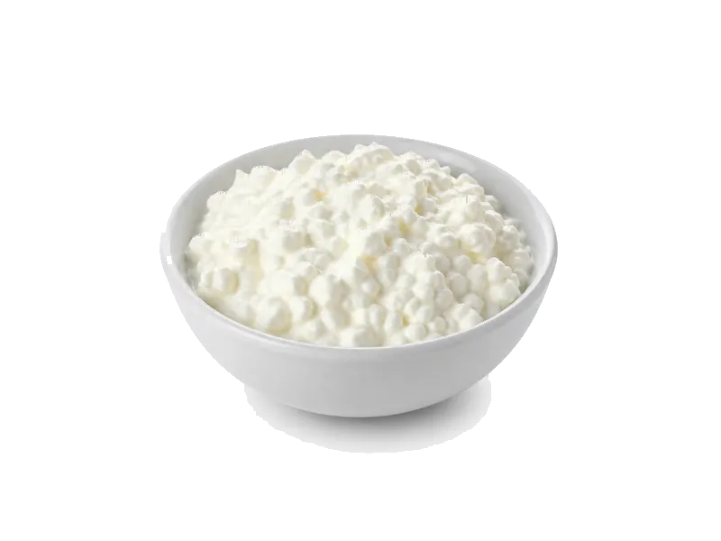

Nabiał i jaja
Serek wiejski
Serek wiejski: 11 g białka, 97 kcal, 2 g węglowodanów i 5 g tłuszczu na 100 g. Kategoria: Nabiał i jaja.
Kalorie97 kcalna 100 g
Białko / proteiny11 g
Węglowodany2 g
Tłuszcz5 g
Cena (szac.)~1,70 złza 100 g
Ceny zaktualizowano: maj 2026 (szacunek — ceny w popularnych supermarketach)
Porcja: opakowanie (200g)
| Kalorie | 194 kcal |
|---|---|
| Białko | 22 g |
| Węglowodany | 4 g |
| Tłuszcz | 10 g |
| Cena (szac.) | ~3,39 zł |
Szczegółowe składniki odżywcze na 100 g
| Wartość energetyczna (kalorie) | 97 kcal |
|---|---|
| Białko (proteiny) | 11 g |
| Węglowodany | 2 g |
| Tłuszcz | 5 g |
| Tłuszcze nasycone | 3 g |
| Tłuszcze nienasycone | 2 g |
| Witaminy i minerały | Wapń, Witamina B2, Fosfor |
| Współczynnik kcal / 1 g białka | 8.8 |
| Cena produktu (szac. za 100 g) | ~1,70 zł |
| Cena za 100 g białka (szac.) | ~15,41 zł |